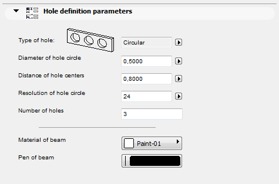

| << Attributes | Back to the main page | Expressions and Functions >> |
In addition to the 3D and 2D script windows that define the appearance of the GDL Object, further scripts are available for adding complementary information to it. These are the Properties Script used for quantity calculations, the Parameter Script that includes the list of possible values for different parameters, and the User Interface Script for creating a custom interface for parameter entry, Forward Migration Script and Backward Migration Scripts to define how to migrate an old instance forward to the actual element or how to migrate the element backward to an older one. The commands available for all these script types are detailed on the following pages.
Library parts have a GDL window reserved for the Properties script. This script allows you to make library part properties dependent on parameters, and, through a directive, define their place in the final component list. By using a few commands, it is possible to define in the script local descriptors and components. Descriptors and components from external databases can also be referenced. Code lengths cannot exceed 32 characters.
In the Properties script, you can use any GDL command that does not generate a shape.
DATABASE_SET set_name [, descriptor_name, component_name, unit_name, key_name,
criteria_name, list_set_name]
Database set definition or Database set selection. If this command is placed in a MASTER_GDL script, it will define a Database set containing Descriptor, Component, Unit, Key, Criteria and List Scheme files.
This Database set name can then be referenced from Properties Scripts using the same command with only the set_name parameter as a directive, by selecting the actual Database set that REF COMPONENTs and REF DESCRIPTORs refer to. The default Database set name is "Default Set", and will be used if no other set has been selected. The default Database set file names are: DESCDATA, COMPDATA, COMPUNIT, LISTKEY, LISTCRIT, LISTSET. All these names get translated in localized Archicad versions.
Scripts can include any number of DATABASE_SET selections.
set_name: database set name.descriptor_name: descriptor data file name.component_name: component data file name.unit_name: unit data file name.key_name: key data file name.criteria_name: criteria file name.list_set_name: list Scheme file name.DESCRIPTOR name [, code, keycode]
Local descriptor definition. Scripts can include any number of DESCRIPTORs.
name:
can extend to more than one line. New lines can be defined by the character '\n' and tabulators by '\t'.
Adding '\' to the end of a line allows you to continue the string in the next line without adding a new line.
Inside the string, if the '\' character is doubled (\\), it will lose its control function and simply mean '\'.
The length of the string (including the new line characters) cannot exceed 255 characters:
additional characters will be simply cut by the compiler. If you need a longer text, use several DESCRIPTORs.
code: string, defines a code for the descriptor.keycode: string, reference to a key in an external database.The key will be assigned to the descriptor.
REF DESCRIPTOR code [, keycode]
Reference by code and keycode string to a descriptor in an external database.
COMPONENT name, quantity, unit [, proportional_with, code, keycode, unitcode]
Local component definition. Scripts can include any number of COMPONENTs.
name: the name of the component (max. 128 characters).quantity: a numeric expression.unit: the string used for unit description.proportional_with:
a code between 1 and 6.
When listing, the component quantity defined above will be automatically multiplied by a value calculated for the current listed element:
1: item,2: length,3: surface A,4: surface B,5: surface,6: volume.code: string, defines a code for the component.keycode: string, reference to a key in an external database. The key will be assigned to the component.unitcode:
string, reference to a unit in an external database that controls the output format of the component quantity.
This will replace the locally defined unit string.
REF COMPONENT code [, keycode [, numeric_expression]]
Reference by code and keycode string to a component in an external database. The value to multiply by in the component database can be overwritten by the optional numeric expression specified here.
BINARYPROP
Binaryprop is a reference to the binary properties data (components and descriptors) defined in the library part in the Components and Descriptors sections.
DATABASE_SET directives have no effect on the binary data.
SURFACE3D ()
The Surface 3D () function gives you the surface of the 3D shape of the library part.
Warning: If you place two or more shapes in the same location with the same parameters, this function will give you the total sum of all shapes’ surfaces.
VOLUME3D ()
The Volume 3D () function gives you the volume of the 3D shape of the library part.
Warning: If you place two or more shapes in the same location with the same parameters, this function will give you the total sum of all shapes’ volumes.
POSITION position_keyword
Effective only in the Component List.
Changes only the type of the element the following descriptors and components are associated to. If there are no such directives in the Properties script, descriptors and components will be listed with their default element types.
position_keyword: keywords are the following:WALLSCOLUMNSBEAMSDOORSWINDOWSOBJECTSCEILSPITCHED_ROOFSLIGHTSHATCHESROOMSMESHESA directive remains valid for all succeeding DESCRIPTORs and COMPONENTs until the next directive is ascribed. A script can include any number of directives.
Example:
DESCRIPTOR "\tPainted box.\n\t Properties:\n\ \t\t - swinging doors\n\ \t\t - adjustable height\n\ \t\t - scratchproof" REF DESCRIPTOR "0001" s = SURFACE3D () !wardrobe surface COMPONENT "glue", 1.5, "kg" COMPONENT "handle", 2*c, "nb" !c number of doors COMPONENT "paint", 0.5*s, "kg" POSITION WALLS REF COMPONENT "0002"
DRAWING
DRAWING: Refers to the drawing described in the 2D script of the same library part. Use it to place drawings in your bill of materials.
Parameter lists are sets of possible numerical or string values. They can be applied to the parameters as defined in the Parameter Script of the Library Part, in the ARCHICAD_Library_Master object or the MASTER_GDL script. Type compatibility is verified by the GDL compiler.
The Parameter Script will be interpreted each time a value list type parameter value is to be changed, and the possible values defined in the script will appear in a pop-up menu. For numerical parameters pop-up menu item values can be defined as strings using the VALUES{2} command.
VALUES "parameter_name" [,]value_definition1 [, value_definition2, ...]
VALUES "fill_parameter_name" [[,] FILLTYPES_MASK fill_types], value_definition1
[, value_definition2, ...]
VALUES "profile_parameter_name" [[,] PROFILETYPES_MASK profile_types], value_definition1
[, value_definition2, ...]
Defines a value restriction for a parameter (except dictionary types). The command has a special syntax for fill type and profile type parameters. If used on an array parameter, the restriction will be applied to all items individually.
parameter_name: name of an existing parameterfill_parameter_name: name of an existing fillpattern type parameterfill_types: fill_types = j1 + 2*j2 + 4*j3, where each j can be 0 or 1.
j1: cut fills,j2: cover fills,j3: drafting fills.Can be used for fill-pattern type parameters only. The fill popup for this parameter will contain only those types of fills which are specified by the bits set to 1. Default is all fills (0).
profile_parameter_name: name of an existing profile type parameterprofile_types: profile_types = j1 + 2*j2 + 4*j3 + 8*j4 + 16*j5, where each j can be 0 or 1.
j1: wall,j2: beam,j3: column,j4: handrail,j5: other.Can be set for profile type parameters only. The value list for any profile type parameter includes all existing profiles of the planfile automatically, no individual VALUES definition is needed. Using VALUES without masking (0) has the exact same result. Using VALUES with masking can filter the value list, leaving only the corresponding profiles of the bits set to 1. Individual profile indexes can be listed as regular value definitions as well.
value_definitioni: value definition, can be:expression: numerical or string expression, orCUSTOM: keyword, meaning that any custom value can be entered, orRANGE: range definition, with optional step
RANGE left_delimiter[lower_limit], [upper_limit]right_delimiter [STEP step_start_value, step_value]
left_delimiter: [, meaning >=, or (, meaning >; lower_limit: lower limit expression; upper_limit: upper limit expression; right_delimiter: ], meaning <=, or ), meaning <; step_start_value: starting value; step_value: step value.
If value_definition1 is a numerical expression with explicit '+' sign, the ',' after the parameter name must be added.
VALUES{2} "parameter_name" [,]num_expression1, description1,
[, num_expression2, description2, ...]
VALUES{2} "parameter_name" [,]num_values_array1, descriptions_array1
[, num_values_array2, descriptions_array2, ...]
parameter_name: name of an existing angle, length, real, or integer type parameternum_expressioni, num_values_arrayi:
simple value definition for a numerical parameter, or array expression containing multiple numerical values.
If num_expression1 has an explicit '+' sign, the ',' after the parameter name must be added.
descriptioni, descriptions_arrayi: description string of the numerical value i, or array expression containing multiple description strings of
the values defined by num_values_arrayi (array dimensions must match). Available only for VALUES{2}Example 1: Simple value lists
VALUES "par1" 1, 2, 3 VALUES "par2" "a", "b" VALUES "par3" 1, CUSTOM, SIN (30) VALUES "par4" 4, RANGE(5, 10], 12, RANGE(,20] STEP 14.5, 0.5, CUSTOM
Example 2: Read all string values from a file for use in a value list
DIM sarray[]
! file in the library, containing parameter data
filename = "ProjectNotes.txt"
ch1 = OPEN ("text", filename, "MODE=RO, LIBRARY")
i = 1
j = 1
sarray[1] = ""
! collect all strings
DO
n = INPUT (ch1, i, 1, var)
IF n > 0 AND VARTYPE (var) = 2 THEN
sarray[j] = var
j = j + 1
ENDIF
i = i + 1
WHILE n > 0
CLOSE ch1
! parameter popup with strings read from the file
VALUES "RefNote" sarrayPARAMETERS name1 = expression1 [,
name2 = expression2, ...,
namen = expressionn]
namei: the name of the parameter.expressioni: the new value of the parameter.Using this command, the parameter values of a Library Part can be modified by the Parameter Script.
The modification will only be effective for the next interpretation. Commands in macros refer to the caller’s parameters. If the parameter is a value list, the value chosen will be either an existing value, the custom value, or the first value from the value list.
In addition, the global string variable GLOB_MODPAR_NAME contains the name of the last user-modified parameter.
LOCK "name1" [, "name2", ..., "namen"]
Locks the named parameter(s) in the settings dialog box. A locked parameter will appear grayed in the dialog box and its value cannot be modified by the user.
namen: string expression, name of the parameter to be locked.Compatibility: starting from Archicad 22, the locking/hiding of selected Archicad interface controls is extended.
The extended feature can be activated with "Enable hide/lock of specific fix named optional parameters" setting (see "Details/Compatibility Options" dialog of the object in the Library Part Editor). The extended selection contains fix named optional parameters corresponding to:
standard text handling controls of "Text Style" settings dialog panel - see the section called “Parameters for Text Handling”,
extended label styling controls of "Text Style" settings dialog panel in Label tool - see the section called “Parameters for Labels”,
and selected label pointer controls of "Pointer" settings dialog panel - see the section called “Parameters for Labels”.
LOCK ALL ["name1" [, "name2", ..., "namen"]]
Locks all parameters in the settings dialog box, except those listed after the ALL keyword.
HIDEPARAMETER "name1" [, "name2", ..., "namen"]
Hides the named parameter(s) and its child parameters in the settings dialog box. A parameter hidden using this command in the parameter script will automatically disappear from the parameter list.
namen: string expression, name of the parameter to be hidden.Compatibility: starting from Archicad 22, the locking/hiding of selected Archicad interface controls is extended. For details, see the LOCK command.
HIDEPARAMETER ALL ["name1" [, "name2", ..., "namen"]]
Hides all parameters and its child parameters in the settings dialog box, except those (and their children) listed after the ALL keyword.
Using the following GDL commands, you can define a custom interface for a Library Part’s Custom Settings panel in the settings dialog box. If you click the Set as default button in the Library Part editor, the custom interface will be used by default in the Object’s (Door’s, Window’s, etc.) settings dialog box. Parameters with custom control are not hidden automatically on the original parameter list, but they can be hidden manually in the library part editor.
The origin of the coordinate system is in the top-left corner. Sizes and coordinate values are measured in pixels.
UI_DIALOG title [, size_x, size_y]
Defines the title of the dialog box. The default title is 'Custom Settings'. Currently, the size of the available area is fixed at 444 x 296 pixels, and the size_x and size_y parameters are not used.
Restriction: The Interface Script should contain only one UI_DIALOG command.
UI_PAGE page_number [, parent_id, page_title [, image]]
Page directive, defines the page that the interface elements are placed on. Default page numbering starts at 1, but any starting number is usable. If there is no UI_PAGE command in the Interface Script, each element will be displayed on the first page by default. Moving between pages can be defined in different ways:
The easiest way is to let Archicad do it: in the object editor, press the "Hierarchical Pages" button in the User Interface Script window, and fill in the optional parameters of the UI_PAGE command. In this case the page_number of the page selected from the tree is passed to the library part through the "gs_ui_current_page" parameter. No need to set a value list for the paging parameter: Archicad collects and sorts all valid page ID-s from the UI_PAGE command's parameters by pre-reading the object's ui script.
Another method is to use two buttons created with the UI_NEXT and UI_PREV commands, placing them on every page to manipulate the value of the "gs_ui_current_page" parameter. See the UI_BUTTON command for more information.
In case the new hierarchical page setup is not required, to create dynamic page handling, use the the UI_INFIELD{3} command. Set a value list for "gs_ui_current_page" parameter, and place a popup using its values on every page.
page_number: the page number, a positive integer. Following interface elements are placed on this page.parent_id: positive integer, the parent id of the page. The special value -1 value means root parent. Only evaluated if "Hierarchical Pages" is set.page_title: title string of the page, appears on the top of the page and the tree view popup of the pages. Only evaluated if "Hierarchical Pages" is set.image: file name or index number of a picture stored in the library part. If specified and not empty or 0, this icon associated
to the page is displayed on the top of the page and in tree view popup of the pages, next to the title. Only evaluated if "Hierarchical Pages" is set.Warning: In the simple way of paging, any break of continuity in the page numbering forces the insertion of a new page without buttons, and therefore there will be no possibility to go to any other page from there. This restriction can be circumvented using the UI_CURRENT_PAGE command.
UI_CURRENT_PAGE index
Definition of the current tabpage to display.
Warning: Jumping to a non-existent page forces the insertion of a new page without buttons and controls, and therefore there is no possibility to go to any other page from there.
index: valid index of the UI_PAGE to display.UI_BUTTON type, text, x, y [, width, height, id [, url]]
Button definition on current page. Buttons can be used for various purposes: moving from page to page, opening a web page or performing some parameter-script defined action. Buttons can contain text.
type: type of the button as follows:UI_PREV: if pressed, the previous page is displayed,UI_NEXT: if pressed, the next page is displayed,UI_FUNCTION: if pressed, the GLOB_UI_BUTTON_ID global variable is set to the button id specified in expression,UI_LINK: if pressed, the URL in expression is opened in the default web browser,text: the text that should appear on the button.x, y: the position of the button.width, height: width and height of the button in pixels.
If not specified (for compatibility reasons) the default values are 60 pixels for width and 20 pixels for height.id: an integer unique identifier.url: a string containing a URL.UI_PREV and UI_NEXT buttons are disabled if the previous/next page is not present. If these buttons are pushed, the gs_ui_current_page parameter of the library part is set to the index of the page to show - if there’s a parameter with this name.
Example:
! UI script
UI_CURRENT_PAGE gs_ui_current_page
UI_BUTTON UI_FUNCTION, "Go to page 9", 200,150, 70,20, 3
UI_BUTTON UI_LINK, "Visit Website", 200,180, 100,20, 0,
"https://graphisoft.com"
! parameter script
if GLOB_UI_BUTTON_ID = 3 then
parameters gs_ui_current_page = 9, ...
endifUI_PICT_BUTTON type, text, picture_reference,
x, y, width, height [, id [, url]]
Similar to the UI_BUTTON command. But this type of buttons can contain pictures.
picture_reference:
file name or index number of the picture stored in the library part.
The index 0 refers to the preview picture of the library part.
Pixel transparency is allowed in the picture.
text:
has no effect for picture buttons.
UI_SEPARATOR x1, y1, x2, y2
Generates a separator rectangle. The rectangle becomes a single (vertical or horizontal) separator line if x1 = x2 or y1 = y2
x1, y1: upper left node coordinates (starting point coordinates of the line).x2, y2: lower right node coordinates (endpoint coordinates of the line).UI_GROUPBOX text, x, y, width, height
A groupbox is a rectangular separator with caption text. It can be used to visually group logically related parameters.
text: the title of the groupbox.x, y: the position of upper left corner.width, height: width and height in pixels.UI_PICT picture_reference, x, y [, width, height [, mask]]
Picture element in the dialog box. The picture file must be located in one of the loaded libraries.
picture_reference:
file name or index number of the picture stored in the library part.
The index 0 refers to the preview picture of the library part.
x, y: position of the top left corner of the picture.width, height: optional width and height in pixels; by default, the picture’s original width and height values will be used.mask: alpha + distortion.See the PICTURE command for full explanation.
UI_STYLE fontsize, face_code
All the UI_OUTFIELDs and UI_INFIELDs generated after this keyword will represent this style until the next UI_STYLE statement.
fontsize: one of the following font size values:0: small,1: extra small,2: large.face_code: similar to the DEFINE STYLE command, but the values cannot be used in combination.0: normal,1: bold,2: italic,4: underline.UI_OUTFIELD expression, x, y [, width, height [, flags]]
Generates a static text.
expression: numerical or string expression.x, y: position of the text block’s top left corner.width, height: width and height of the text box.
If omitted, the text box will wrap around the text as tight as possible for the given font.flags: flags = j1 + 2*j2 + 4*j3, where each j can be 0 or 1.
j1: horizontal alignment (with j2),j2: horizontal alignment (with j1):j1 = 0, j2 = 0: Aligns to the left edge (default),
j1 = 1, j2 = 0: Aligns to the right edge,
j1 = 0, j2 = 1: Aligns to the center,
j1 = 1, j2 = 1: Not used,
j3: grayed text.UI_INFIELD "name", x, y, width, height [,
method, picture_name,
images_number,
rows_number, cell_x, cell_y,
image_x, image_y,
expression_image1, text1,
...
expression_imagen, textn]
UI_INFIELD{2} name, x, y, width, height [,
method, picture_name,
images_number,
rows_number, cell_x, cell_y,
image_x, image_y,
expression_image1, text1,
...
expression_imagen, textn]
UI_INFIELD{3} name, x, y, width, height [,
method, picture_name,
images_number,
rows_number, cell_x, cell_y,
image_x, image_y,
expression_image1, text1, value_definition1,
...
[picIdxArray, textArray, valuesArray,
...]
expression_imagen, textn, value_definitionn]
UI_INFIELD{4} "name", x, y, width, height [,
method, picture_name,
images_number,
rows_number, cell_x, cell_y,
image_x, image_y,
expression_image1, text1, value_definition1,
...
[picIdxArray, textArray, valuesArray,
...]
expression_imagen, textn, value_definitionn]
Generates an edit text or a pop-up menu for the parameter input. A pop-up is generated if the parameter type is value list, material, fill, line type or pencolor.
If the optional parameters of the command are present, value lists can be alternatively displayed as thumbnail view fields. Different thumbnail control types are available. They display the specified images and associated texts and allow the selection of one single item at a time, just like in a pop-up menu.
In the version 1 and 2 infield, the thumbnail items and the value list items are associated by indices.
The version 3 and version 4 infield defines value association which binds the thumbnail items to value list items of the associated parameter. If a value defined in a thumbnail item isn’t present in the parameter’s value list, it won’t be displayed in the control. Identical sized arrays can be used for lines of definition as well.
The Interface Script is rebuilt with the new value after any parameter is modified.
name:
parameter name as string expression (all 4 command versions),
with parameter name option for UI_INFIELD{2} and UI_INFIELD{3},
and parameter name as text array value option for UI_INFIELD{4}.x, y: the position of the edit text, pop-up or control.width, height: width and height in pixels.method: the type of the control.1: List view control.2: Popup menu control.3: Popup icon radio control (arrow on picture).4: Push icon radio control.5: Pushbutton with text.6: Pushbutton with picture.7: Checkbox with text.8: Popup list with text.9: Popup icon radio control (arrow next to picture).picture_name: name of the common image file containing a matrix of concatenated images, or empty string.images_number: number of images in the matrix, for boolean parameters it can be 0 or 2.rows_number: number of rows of the matrix.cell_x, cell_y: width and height of a cell within the thumbnail view field, including image and text.image_x, image_y: width and height of the image in the cell.expression_imagei:
index of image number i in the matrix, or individual file name.
If a common image file name was specified, indices must be used here.
Combination of indices and individual file names does not work.
texti: text in cell number i.value_definitioni: value definition which matches the cell with a value list item by value:expression: numerical or string expression, orCUSTOM: keyword, meaning that any custom value can be entered.picIdxArray: Dynamic array of picture names (strings) or indexes (integers) in cells. Do not use mixed types in arraytextArray: Dynamic array of texts in cellsvalueArray: Dynamic array of parameter values in cellsExample 1:
IF c THEN
UI_DIALOG "Hole definition parameters"
UI_OUTFIELD "Type of hole:",15,40,180,20
UI_INFIELD "D",190,40,105,20
IF d="Rectangular" THEN
UI_PICT "rect.pict",110,33,60,30
UI_OUTFIELD "Width of hole",15,70,180,20
UI_INFIELD "E", 190,70,105,20
UI_OUTFIELD "Height of hole",15,100,180,20
UI_INFIELD "F", 190,100,105,20
UI_OUTFIELD "Distance between holes",15,130,180,20
UI_INFIELD "G", 190,130,105,20
ELSE
UI_PICT "circle.pict",110,33,60,30
UI_OUTFIELD "Diameter of hole circle",15,70,180,20
UI_INFIELD "J", 190,70,105,20
UI_OUTFIELD "Distance of hole centers", 15,100,180,20
UI_INFIELD "K", 190,100,105,20
UI_OUTFIELD "Resolution of hole circle", 15,130,180,20
UI_INFIELD "M", 190,130,105,20
ENDIF
UI_OUTFIELD "Number of holes",15,160,180,20
UI_INFIELD "I", 190,160,105,20
ENDIF
UI_SEPARATOR 50,195,250,195
UI_OUTFIELD "Material of beam", 15,210,180,20
UI_INFIELD "MAT", 190,210,105,20
UI_OUTFIELD "Pen of beam", 15,240,180,20
UI_INFIELD "P", 190,240,105,20|

|
Example 2:
! Parameter Script:
VALUES "myParameter" "Two", "Three", "Five", CUSTOM
! Interface Script:
px = 80
py = 60
cx = px + 3
cy = py + 25
UI_INFIELD{3} "myParameter", 10, 10, 4 * cx + 21, cy + 5,
1, "myPicture", 6,
1, cx, cy, px, py,
1, "1 - one", "One",
2, "2 - two", "Two",
3, "3 - three", "Three",
4, "4 - four", "Four",
5, "5 - five", "Five",
6, "custom value", CUSTOMExample 3:
! Parameter Script:
VALUES "myParameter" "Two", "Three", "Five", CUSTOM
! Interface Script:
px = 80
py = 60
cx = px + 3
cy = py + 25
paramNameVar = "myParameter"
UI_INFIELD{4} paramNameVar, 10, 10, 4 * cx + 21, cy + 5,
1, "myPicture", 6,
1, cx, cy, px, py,
1, "1 - one", "One",
2, "2 - two", "Two",
3, "3 - three", "Three",
4, "4 - four", "Four",
5, "5 - five", "Five",
6, "custom value", CUSTOMExample 4:
! Master Script
dim picIdxValuesUI[]
dim textValuesUI[]
dim parameterValues[]
if myTypeParameter = 1 then
picIdxValuesUI[1] = 6
picIdxValuesUI[2] = 7
picIdxValuesUI[3] = 8
textValuesUI[1] = "6 - six"
textValuesUI[2] = "7 - seven"
textValuesUI[3] = "8 - eight"
parameterValues[1] = "Six"
parameterValues[2] = "Seven"
parameterValues[3] = "Eight"
else
picIdxValuesUI[1] = 6
picIdxValuesUI[2] = 7
textValuesUI[1] = "6 - six"
textValuesUI[2] = "7 - seven"
parameterValues[1] = "Six"
parameterValues[2] = "Seven"
endif
! Parameter Script:
VALUES "myTypeParameter" 1, 2
VALUES "myStringParameter" "Two", "Three", "Five", parameterValues, CUSTOM
! Interface Script:
px = 80
py = 60
cx = px + 3
cy = py + 25
paramNameVar = "myStringParameter"
UI_INFIELD{4} paramNameVar, 10, 10, 4 * cx + 21, cy + 5,
1, "myPicture", 6,
1, cx, cy, px, py,
1, "1 - one", "One",
2, "2 - two", "Two",
3, "3 - three", "Three",
4, "4 - four", "Four",
5, "5 - five", "Five",
picIdxValuesUI, textValuesUI, parameterValues,
9, "custom value", CUSTOMUI_CUSTOM_POPUP_INFIELD "name", x, y, width, height,
storeHiddenId, treeDepth,
groupingMethod, selectedValDescription,
value1, value2, valuesArray1, .... valuen, valuesArrayn
UI_CUSTOM_POPUP_INFIELD{2} name, x, y, width, height,
storeHiddenId, treeDepth,
groupingMethod, selectedValDescription,
value1, value2, valuesArray1, .... valuen, valuesArrayn
Compatibility: introduced in Archicad 20.
Generates a popup for a value list of a parameter defined in the User Interface script to avoid using the Parameter script.
Suitable for lists which can not be requested in Parameter script. For the parameter script restrictions see the section called “REQUEST Options”.
name:
parameter name as string expression for UI_CUSTOM_POPUP_INFIELD or
parameter name with optional actual index values if array for UI_CUSTOM_POPUP_INFIELD{2}.
x, y: the position of the edit text, pop-up.width, height: width and height in pixels.storeHiddenId, treeDepth: to set up automatic or manual trees.storeHiddenId = 0, treeDepth = 0: works only with array parameters.The "treeDepth" parameter is set automatically by the second dimension (number of columns) of the array.
storeHiddenId = 1, treeDepth > 0: works only with single parameters.There must be n * (1 + treeDepth) values defined (first one for the stored ID and the rest for defining the custom tree).
groupingMethod: grouping method for sorting the tree.1: does not sort the groups and values under the same parent.2: sorts the groups and values under the same parent.selectedValDescription: the text written in the field, if empty string the text will be the stored ID of the selected item.valuei, valuesArrayi: define tree values one-by-one and/or with a one dimension array.
Example:
UI_CUSTOM_POPUP_INFIELD "stParameterName", x, y, width, height,
1, 3, 2, "", ! storeHiddenId, treeDepth, groupingMethod, selectedValDescription
"hiddenID1", "type1", "group1", "value1",
"hiddenID2", "type1", "group1", "value2",
"hiddenID3", "type2", "group2", "value1",
"hiddenID4", "type2", "group2", "value2",
"hiddenID5", "type2", "", "value3",
"hiddenID6", "", "", "value4",
"hiddenID7", "", "", "value5"
UI_RADIOBUTTON name, value, text, x, y, width, height
UI_RADIOBUTTON{2} "name", value, text, x, y, width, height
Version {2} compatibility: introduced in Archicad 20.
Generates a radio button of a radio button group. Radio button groups are defined by the parameter name. Items in the same group are mutually exclusive.
name: parameter name or name as string expression for UI_RADIOBUTTON and parameter name as string expression (or text array indexed value) for UI_RADIOBUTTON{2}.value: parameter is set to this value if this radio button is set.text: this text is displayed beside the radio button.x, y: the position of the radio control.width, height: width and height in pixels.Example:
UI_RADIOBUTTON "ceilingPlan", 0, `Floor Plan`, 10, 140, 100, 20 UI_RADIOBUTTON "ceilingPlan", 1, `Ceiling Plan`, 10, 160, 100, 20
UI_PICT_RADIOBUTTON name, value, text,
picture_reference, x, y, width, height [UI_TOOLTIP tooltip]
UI_PICT_RADIOBUTTON{2} "name", value, text,
picture_reference, x, y, width, height [UI_TOOLTIP tooltip]
Compatibility: introduced in Archicad 22.
Generates one radio button with icon of a radio button group. Radio button groups are defined by the parameter name. Items in the same group are mutually exclusive.
name: parameter name or name as string expression for UI_PICT_RADIOBUTTON and parameter name as string expression (or text array indexed value) for UI_PICT_RADIOBUTTON{2}.value: parameter is set to this value if this radio button is set.text: this text is displayed on the button if no image is declared.picture_reference: file name or index number of the picture stored in the library part.
The index 0 refers to the preview picture of the library part.
Pixel transparency is allowed in the picture.
x, y: the position of the radio control (top left anchor).width, height: width and height of the button in pixels. Image size is not declared individually: it should fit the button, as image is not stretched automatically to fit, and is centered on the button.UI_PICT_PUSHCHECKBUTTON name, text, picture_reference,
frameFlag, x, y, width, height [UI_TOOLTIP tooltip]
UI_PICT_PUSHCHECKBUTTON{2} "name", text, picture_reference,
frameFlag, x, y, width, height [UI_TOOLTIP tooltip]
Compatibility: introduced in Archicad 22.
Generates one pushcheck button with icon for a boolean parameter. Similar to the UI_INFIELD{3} command with method 6, with additional option to control the visibility of the button frame.
name: parameter name or name as string expression for UI_PICT_PUSHCHECKBUTTON and parameter name as string expression (or text array indexed value) for UI_PICT_PUSHCHECKBUTTON{2}.text: this text is displayed on the button if no image is declared.picture_reference: file name or index number of the picture stored in the library part.
The index 0 refers to the preview picture of the library part.
Pixel transparency is allowed in the picture.
frameFlag: 1 - frame is displayed, 0 - frame is not visible. Use this option to match the control to other User Interface items in style.x, y: the position of the button (top left anchor).width, height: width and height of the button in pixels. Image size is not declared individually: it should fit the button, as image is not stretched automatically to fit, and is centered on the button.UI_TEXTSTYLE_INFIELD name, faceCodeMask, x, y,
buttonWidth, buttonHeight[, buttonOffsetX]
UI_TEXTSTYLE_INFIELD{2} "name", faceCodeMask, x, y,
buttonWidth, buttonHeight [, buttonOffsetX]
Compatibility: introduced in Archicad 22.
Generates a row of puschcheckbuttons specifically used to set font style via an integer parameter, with similar appearance as seen in the general program interface. The format of the set value matches the input parameter of the DEFINE STYLE{2} command. Both icons and tooltips are referenced from Archicad itself, according to the localized version. The enabled buttons are displayed in a single-row arrangement.
name: parameter name or name as string expression for UI_TEXTSTYLE_INFIELD and parameter name as string expression (or text array indexed value) for UI_TEXTSTYLE_INFIELD{2}.faceCodeMask: used bits add the matching font style option to the control:faceCodeMask = j1 + 2*j2 + 4*j3 + 32*j6 + 64*j7 + 128*j8, where each j can be 0 or 1.
j1: bold,j2: italic,j3: underline,j6: superscript,j7: subscript,j8: strikethrough.If faceCodeMask = 0, then all possible font style buttons are displayed. In case of an invalid faceCodeMask, "Check Script" returns with warning ("Invalid mask value used").
x, y: the position of the first button (top left anchor).buttonWidth, buttonHeight: width and height of one button in pixels. Full width can be calculated by using the faceCodeMask, the buttonWidth and the buttonOffsetX values, if necessary.buttonOffsetX: distance between neighboring buttons in the row, in pixels. Automatic, if not set.UI_LISTFIELD fieldID, x, y, width, height [, iconFlag [, description_header [, value_header]]]
Generates a control for the parameter input as a scrollable list containing an arbitrary number of rows, with the following columns: icon, description and input field for the parameter value. Lines of the list can be defined with the UI_LISTITEM command. UI_LISTFIELD and UI_LISTITEM definitions can be scripted in an arbitrary order. Empty listfields (with no list items) are not displayed.
fieldID:
the unique identifier of the listfield. This ID also used in the UI_LISTITEM commands specifies the listfield the listitems belong to.
Duplicates within a user interface script are not allowed.
x, y:
position of the listfield's top left corner.
width, height:
width and height in pixels.
iconFlag: iconFlag = 0: icon column is not generated for this listfield.
iconFlag = 1: icon column is generated for this listfield (default value if not specified).
If the Custom Settings panel has only one control and this control is a listfield, the x, y, width, height parameters have no effect. In this case the width of the listfield equals to the width of the Custom Settings panel.
description_header:
the title of the Description column.
value_header:
the title of the Value column.
If both description_header and value_header are empty strings or not specified, the listfield is generated without a header. If the strings contain at least one space, the listfield is generated with an empty header.
UI_LISTITEM itemID, fieldID, "name" [, childFlag [, image [, paramDesc]]]
UI_LISTITEM{2} itemID, fieldID, name [, childFlag [, image [, paramDesc]]]
Appends a listitem to the listfield defined by the fieldID parameter.
itemID:
the unique identifier of the listitem. Listitems can be scripted in an arbitrary order and are sorted by itemID.
Duplicate listitem IDs within a listfield are not allowed.
fieldID:
the unique identifier of the listfield containing this listitem.
name:
parameter name as string expression for UI_LISTITEM or parameter name with optional actual index values if array for UI_LISTITEM{2}.
childFlag: childFlag = 0: the listitem is a groupitem (default value if not specified).
childFlag = 1: the listitem is a childitem. The parent item is the first groupitem above.
image:
file name or index number of the picture stored in the library part.
If valid, it is displayed as an icon in the first column of the listfield in the associated listitem's row.
paramDesc:
the visible name of the listitem in the Description column.
If left empty, the description is automatically filled up from the parameter list description of the Library Part.
If there is no description there, the name of the parameter is displayed instead.
If "name" string is empty, the listitem is a group with bold fonttype. If both "name" string and paramDesc are empty, the listitem is a separator. The HIDEPARAMETER command is ineffective for list items, the script should not add the item instead of using it. The LOCK command can be used and it is effective for list items.
For a listfield it is recommended to define different itemIDs for different parameters, groups and separators.
Example:
! List with header without icon column ui_listfield 1, 10, 35, 432, 220, 0, "Description Header Text", "Value Header Text" ui_listitem 1, 1, "", 0, "", "Group Title 1" ! Group Line ui_listitem 2, 1, "A", 1 ui_listitem 3, 1, "B", 1 ui_listitem 4, 1, "ZZYZX", 1 ui_listitem 5, 1, "" !separator ui_listitem 6, 1, "AC_show2DHotspotsIn3D", 0, "", "Group Title 2" ! Group Parameter Line ui_listitem 7, 1, "A", 1, "", "Custom Description A" ui_listitem 8, 1, "B", 1, "", "Custom Description B" ui_listitem 9, 1, "ZZYZX", 1, "", "Custom Description ZZYZX"
UI_CUSTOM_POPUP_LISTITEM itemID, fieldID, "name", childFlag, image, paramDesc,
storeHiddenId, treeDepth,
groupingMethod, selectedValDescription,
value1, value2, valuesArray1, .... valuen, valuesArrayn
UI_CUSTOM_POPUP_LISTITEM{2} itemID, fieldID, name, childFlag, image, paramDesc,
storeHiddenId, treeDepth,
groupingMethod, selectedValDescription,
value1, value2, valuesArray1, .... valuen, valuesArrayn
Compatibility: introduced in Archicad 20.
Similar to the "UI_CUSTOM_POPUP_INFIELD" and the "UI_CUSTOM_POPUP_INFIELD{2}"
Generates a listitem with popup for a value list of a parameter defined in the User Interface script to avoid using the Parameter script.
Suitable for lists which can not be requested in Parameter script. For the parameter script restrictions see the section called “REQUEST Options”.
itemID:
the unique identifier of the listitem. Listitems can be scripted in an arbitrary order and are sorted by itemID.
Duplicate listitem IDs within a listfield are not allowed.
fieldID:
the unique identifier of the listfield containing this listitem.
name:
parameter name as string expression for UI_CUSTOM_POPUP_LISTITEM or
parameter name with optional actual index values if array for UI_CUSTOM_POPUP_LISTITEM{2}.
childFlag: childFlag = 0: the listitem is a groupitem (default value if not specified).
childFlag = 1: the listitem is a childitem. The parent item is the first groupitem above.
image:
file name or index number of the picture stored in the library part.
If valid, it is displayed as an icon in the first column of the listfield in the associated listitem's row.
paramDesc:
the visible name of the listitem in the Description column.
If left empty, the description is automatically filled up from the parameter list description of the Library Part.
If there is no description there, the name of the parameter is displayed instead.
storeHiddenId, treeDepth: to set up automatic or manual trees.storeHiddenId = 0, treeDepth = 0: works only with array parameters.The "treeDepth" parameter is set automatically by the second dimension (number of columns) of the array.
storeHiddenId = 1, treeDepth > 0: works only with single parameters.There must be n * (1 + treeDepth) values defined (first one for the stored ID and the rest for defining the custom tree).
groupingMethod: grouping method for sorting the tree.1: does not sort the groups and values under the same parent.2: sorts the groups and values under the same parent.selectedValDescription: the text written in the field, if empty string the text will be the stored ID of the selected item.valuei, valuesArrayi: define tree values one-by-one and/or with a one dimension array.
Example:
UI_CUSTOM_POPUP_LISTITEM itemID, fieldID, "stParameterName", 0, "", "",
1, 3, 2, "", ! storeHiddenId, treeDepth, groupingMethod, selectedValDescription
"hiddenID1", "type1", "group1", "value1",
"hiddenID2", "type1", "group1", "value2",
"hiddenID3", "type2", "group2", "value1",
"hiddenID4", "type2", "group2", "value2",
"hiddenID5", "type2", "", "value3",
"hiddenID6", "", "", "value4",
"hiddenID7", "", "", "value5"
UI_BUTTON type, text, x, y, width, height [, id [, url]] [ UI_TOOLTIP tooltiptext ]
UI_PICT_BUTTON type, text, picture_reference,
x, y, width, height [, id [, url]] [ UI_TOOLTIP tooltiptext ]
UI_INFIELD "name", x, y, width, height [, extra parameters ... ]
[ UI_TOOLTIP tooltiptext ]
UI_INFIELD{2} name, x, y, width, height [, extra parameters ... ]
[ UI_TOOLTIP tooltiptext ]
UI_INFIELD{3} name, x, y, width, height [, extra parameters ... ]
[ UI_TOOLTIP tooltiptext ]
UI_INFIELD{4} "name", x, y, width, height [, extra parameters ... ]
[ UI_TOOLTIP tooltiptext ]
UI_CUSTOM_POPUP_INFIELD "name", x, y, width, height , extra parameters ...
[ UI_TOOLTIP tooltiptext ]
UI_CUSTOM_POPUP_INFIELD{2} name, x, y, width, height , extra parameters ...
[ UI_TOOLTIP tooltiptext ]
UI_RADIOBUTTON name, value, text, x, y, width, height [ UI_TOOLTIP tooltiptext ]
UI_OUTFIELD expression, x, y, width, height [, flags] [ UI_TOOLTIP tooltiptext ]
UI_PICT expression, x, y [, width, height [, mask]] [ UI_TOOLTIP tooltiptext ]
UI_LISTFIELD fieldID, x, y, width, height [, iconFlag [, description_header [, value_header]]]
[ UI_TOOLTIP tooltiptext ]
UI_LISTITEM itemID, fieldID, "name" [, childFlag [, image [, paramDesc]]]
[ UI_TOOLTIP tooltiptext ]
UI_LISTITEM{2} itemID, fieldID, name [, childFlag [, image [, paramDesc]]]
[ UI_TOOLTIP tooltiptext ]
UI_CUSTOM_POPUP_LISTITEM itemID, fieldID, "name", childFlag , image , paramDesc,
extra parameters ...
[ UI_TOOLTIP tooltiptext ]
UI_CUSTOM_POPUP_LISTITEM{2} itemID, fieldID, name, childFlag , image , paramDesc,
extra parameters ...
[ UI_TOOLTIP tooltiptext ]
Defines the tooltip for the control on the user interface page. Tooltips are available for buttons, infields, outfields, listfields, listitems and pictures if they are not disabled by the user in the running context (e.g., in the Help menu of Archicad).
The listfield's tooltip appears in all included listitems if an item has none declared. The own tooltip of the listitem will take effect over the tooltip of the listfield (if existing) inline.
tooltiptext: the text to display as tooltip for the control.UI_COLORPICKER "redParamName", "greenParamName", "blueParamName", x0, y0 [, width [, height]]
UI_COLORPICKER{2} redParamName, greenParamName, blueParamName, x0, y0 [, width [, height]]
Color picker dialog to set the r, g, b components of a color and store them into the given parameters. These values can later be used in the LIGHT command.
redParamName, greenParamName, blueParamName:
parameter names as string expression for UI_COLORPICKER or parameter names with optional actual index values if array for UI_COLORPICKER{2}
x0, y0:
position of the color picker's top left corner.
width, height:
width and height in pixels.
UI_SLIDER "name", x0, y0, width, height [, nSegments [, sliderStyle]]
UI_SLIDER{2} name, x0, y0, width, height [, nSegments [, sliderStyle]]
Generates a slider control for an integer parameter defined with a range. For integer parameters with undefined range lower and upper limit values are -32768 (minimum signed short) and 32767 (maximum signed short).
name: parameter name as string expression parameter or name with optional actual index values for UI_SLIDER{2}.x0, y0: position of the slider.width, height: slider width and height in pixels. If the width > height the slider is horizontal, in the opposite case
it is vertical. nSegments: optional number of segments on the slider. If 0, no segments are displayed, if omitted or negative, the number
of segments are calculated from the range upper and lower limit values and the step defined for the parameter.sliderStyle: optional slider style (default is 0)0: slider points to the bottom (horizontal sliders) or to the right (vertical sliders).1: slider points to the top (horizontal sliders) or to the left (vertical sliders).If an element is changed completely in a newer library, compatibility can be maintained by defining the migration logic. For more detailed information, please take a look at the section called “Forward Migration script”.
Example:
actualGUID = FROM_GUID
! ==============================================================================
! Subroutines
! ==============================================================================
_startID = "AAAA-AAAA-...AAA"
_endID = "BBBB-BBBB-...BBB"
gosub "migrationstepname_FWM"
! ==============================================================================
! Set Migration GUID
! ==============================================================================
setmigrationguid actualGUID
! ==============================================================================
end ! end ! end ! end ! end ! end ! end ! end ! end ! end ! end ! end ! end ! en
! ==============================================================================
! ==============================================================================
! migrationstepname
! ==============================================================================
"migrationstepname_FWM":
if actualGuid = _startID then
newParameter = oldParameter
parameters newParameter = newParameter
actualGuid = _endID
endif
return
FROM_GUID is the global variable holding the main ID of the original object which the migration is run on.
In case the script succeeds, the instance gets substituted by the new element with the updated parameters.
SETMIGRATIONGUID guid
The command tells the running environment, which element will be the matching migration element for the current object. If the returned ID belongs to the current element, the migration of the object gets complete.
STORED_PAR_VALUE ("oldparname", outputvalue)
Retrieves the value of a parameter, which is present in the migrated object, and present or deleted in the new version object. This command form is suggested for those parameters present in the new object as well. To get the value of an old array Parameter, the outputvalue parameter must be initialized as an array (with the dim command).
oldparname: string expression, name of the parameter in the old parameter list.outputvalue: output variable to store the value of the parameter.Return value: 1 on success, 0 otherwise (for example, if there is no parameter with that name in the parameter list of the old object). During checking the script the return value is always 0, because the old Parameters section is not known.
DELETED_PAR_VALUE ("oldparname", outputvalue)
Retrieves the value of a parameter, which is present in the migrated object, and present or deleted in the new version object. This command form is suggested for those parameters deleted from the new object. To get the value of an old array Parameter, the outputvalue parameter must be initialized as an array (with the dim command).
oldparname: string expression, name of the parameter in the old parameter list.outputvalue: output variable to store the value of the parameter.Return value: 1 on success, 0 otherwise (for example, if there is no parameter with that name in the parameter list of the old object). During checking the script the return value is always 0, because the old Parameters section is not known.
Via the Backward Migration script you can define the backward conversion logic converting new object instances to older ones. For more and detailed information, please take a look at the section called “Backward Migration script”.
Example:
targetGUID = TO_GUID
! ==============================================================================
! Subroutines
! ==============================================================================
gosub "migrationstepname_BWM"
! ==============================================================================
! Set Migration GUID
! ==============================================================================
setmigrationguid targetGUID
! ==============================================================================
end ! end ! end ! end ! end ! end ! end ! end ! end ! end ! end ! end ! end ! en
! ==============================================================================
! ==============================================================================
! migrationstepname
! ==============================================================================
"migrationstepname _BWM":
if targetGUID # "" then
bMigrationSuccess = 1
if bMigrationSuccess = 1 then
oldParameter = newParameter
parameters oldParameter = oldParameter
else
targetGuid = ""
endif
endif
return
TO_GUID is the global variable holding the main ID of the target element in the conversion.
Use the SETMIGRATIONGUID command for setting targetGUID.
NEWPARAMETER "name", "type" [, dim1 [, dim2]]
Adds a new parameter to the parameters of a library part in the Backward Migration Script. The parameter creation happens only after the full interpretation of the script. If a parameter with the given name already exists in the parameters list, an error occurs.
name: string expression, name of the parameter to be created.type: string expression, type of the parameter. Possible values are:IntegerLengthAngleRealNumLightSwitchColorRGBIntensityLineTypeMaterialFillPatternPenColorStringBooleanBuildingMaterial(Compatibility: introduced in Archicad 22.)Profile(Compatibility: introduced in Archicad 22.)Dictionary(Compatibility: introduced in Archicad 24.)dim1, dim2:
dim1 is the first dimension of the parameter, 0 if not set. dim2 is the second dimension of the parameter, 0 if not set.
dim1 = 0, dim2 = 0: the parameter is a scalar parameter,dim1 > 0, dim2 = 0: the parameter is a 1 dimensional array,dim1 > 0, dim2 > 0: the parameter is a 2 dimensional array,If dim2 > 0, then dim1 > 0.
GDL Reference Guide
Copyright© 2022 by Graphisoft, all rights reserved. Reproduction, paraphrasing or translation without express prior written permission is strictly prohibited.